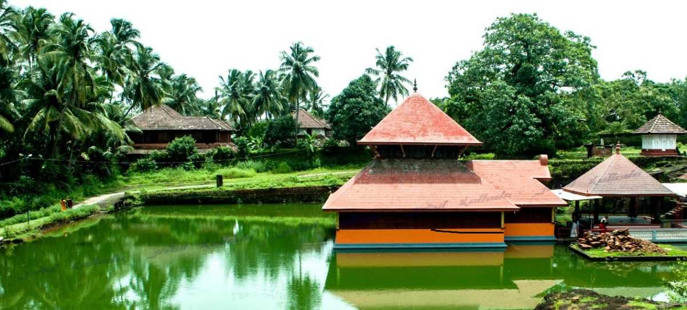

Ranipuram

The gentle hills of Ranipuram in Kerala are famous for its trekking trail. Situated at the height of about 750 meters above sea level, this destination has thick forest vegetation and lush green grasslands. The whole place is proposed inside the Ranipuram Wildlife Sanctuary which merges with Talakaveri Wildlife Sanctuary of Karnataka.The sublime beauty of this region is comparable to that of Ooty, and is a must-visit for all nature enthusiasts. The innocent life of the village and gentle nature make a perfect blend of delight and enjoyment. The entire trek route of Ranipuram is very scenic and a delight for nature photographers.
Read More...Chandragiri fort

Built-in the 17th century by Sivappa Nayak of Bedanore, the Chandragiri fort lies in the Kasaragod District of north Kerala, the southern state of India. Now only a remnant of its original majestic form and protected under State Archaeology Department, the fort once used to be a powerful stronghold of the kingdom.The Chandragiri Boat Club nearby offers boat trips to the nearby islands and palm groves, and on some of the islands you can get down and camp. The local fishermen will accompany you in the boat rides, so you will get to know the unabridged stories of the locales, and any compelling story, legend or folklore about the fort, if there is any.
Read More...Ananthapura Lake Temple

Ananthapura Lake Temple is a serene Hindu temple built in the middle of a lake located in Village Ananthapura, Kasargod. It is a holy temple of Ananthapadmanabhan Swami. It is believed that Ananthapadmanabhan settled down here first and then moved to Thiruvananthapuram through a cave which lies to the right-hand side corner of the lake. The cave is said to be a natural structure that separates Ananthapura and Thiruvananthapuram and therefore, these two temples retain the name of the same deity.
Read More...